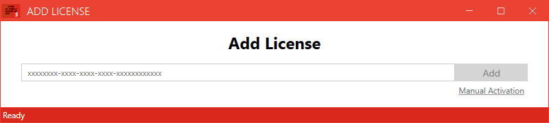
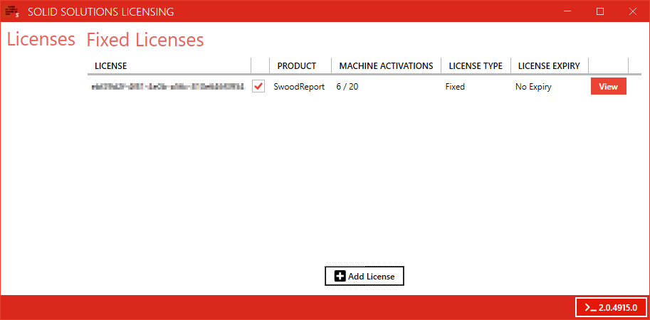
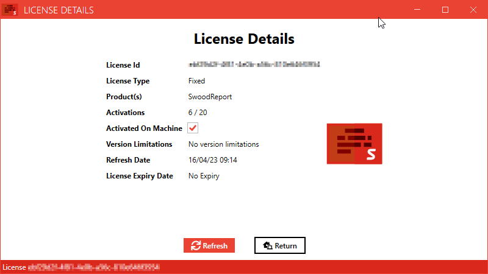

Swood Report & Editor Licensing
- Licensing
- Install Solid Solutions License Manager
- Activation
- Transfer License
- Refresh License
- Troubleshooting
Licensing
All versions of the
Install Solid Solutions License Manager
the
Activation
Open the Solid Solutions Licensing app and click

You will be prompted for your license key which should have been already provided. Click

Your license key should now appear in the list of licenses

Transfer License
Licenses are linked to a machine when activated. As such it is necessary to return a license if you wish to activate it on another machine.
You can transfer a license by launching the

Refresh License
Typically it should not be necessary to manually
To
Troubleshooting
Licenses are linked to a machine using a machine identifier. This identifier can change in certain circumstances, typically a hardware change.
If the machine identified changes then the license will no longer be considered active on your machine and attempting to re-activate the license will result in an error message stating the activation count has been exceeded. Please contact SWOODApps@solidsolutions.co.uk for assistance in such cases.